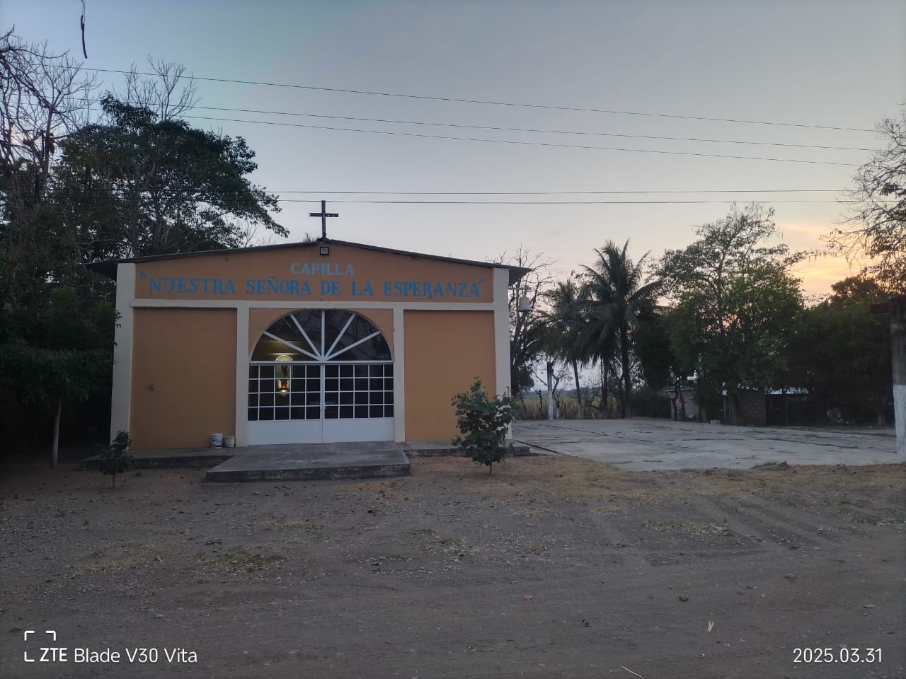
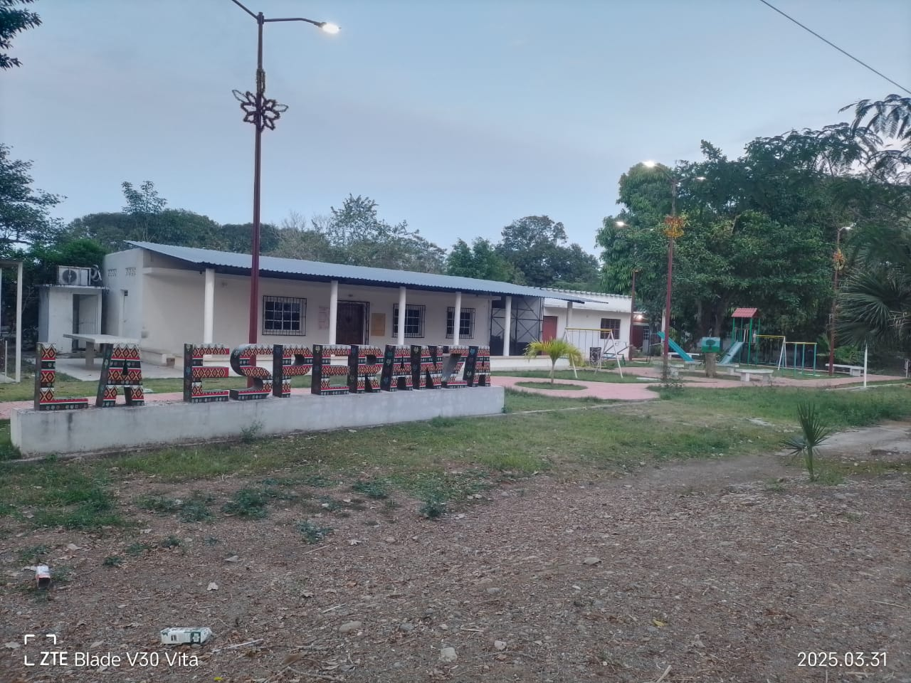
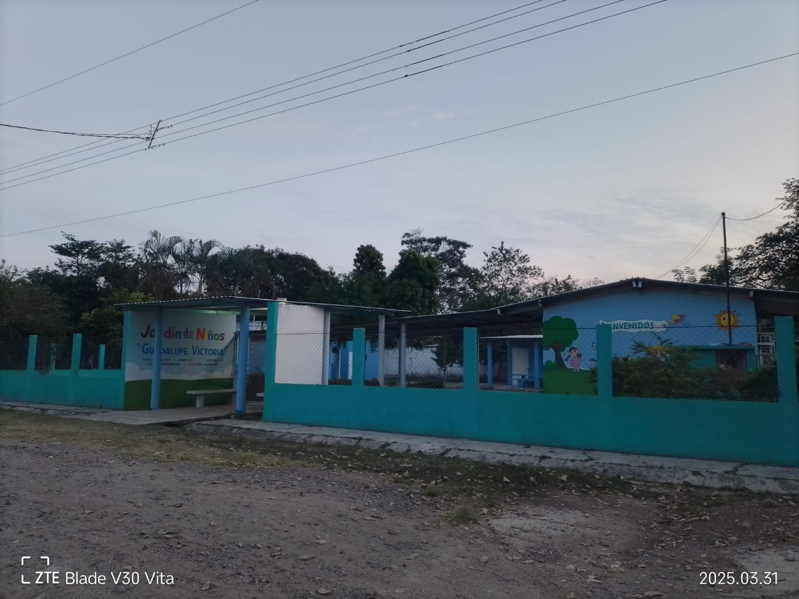
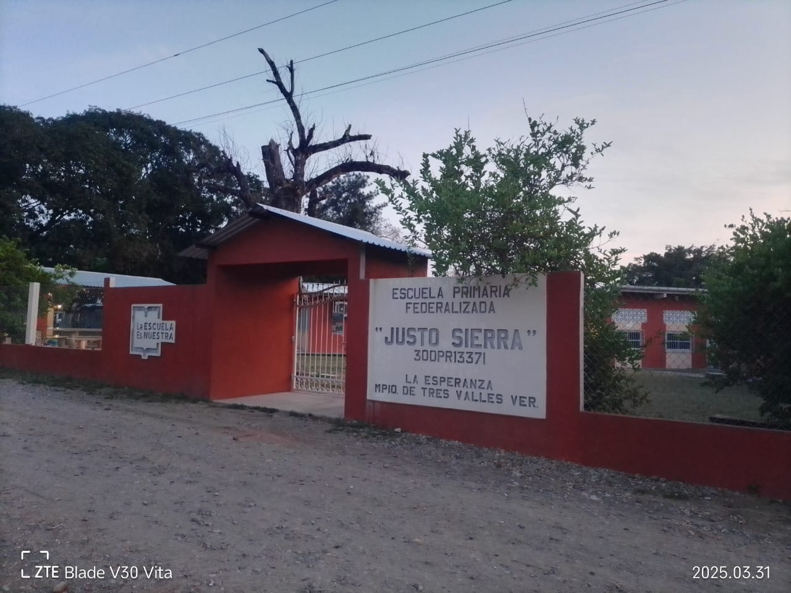

Estos son los lugares de interes de la comunidad "La Esperanza", acompaña en este breve recorrido de lo más transitado de la comunidad.
La iglesia católica, sin duda es el primer lugar que puedes ir a conocer, normalmente sus misas son a las 11:00 am los domingos y su instalación esta climatizada para estar cómodos y ha gusto.

El parque también deberías visitarlo, ya que podrías pasar un momento tranquilo con tu familia o amigos y podrías ir a caminar o bien a hacer ejercicio en compañía o sola.

De igual manera ahí un Jardín de niños llamado "Guadalupe Victoria", en el cual asisten los pequeños que empiezan sus estudios empiezan por el preescolar para aprender y distingir cosas mínimas como, colores, letras, vocales, números, abecedarios y etc. Realizan sus desfiles en la comunidad por ejemplo, primavera, 15 de septiembre, 20 de noviembre y en navidad de misma forma hacen dinámicas el 10 de mayo y el día del padre, es un jardín de niños con muy buena educación.

Mas adelante tenemos un cuadro deportivo el cual se realizan partidos de futbol tanto equipos de la misma comunidad o contra equipos de otras localidades y los partidos son por las tardes y también se ocupa para que entrenen los equipos.
Por ultimo pero no menos importante, encontraremos adelante la Primaria "Justo Sierra", en la cual acuden los niños de la comunidad a recibir su Educación Básica, contando con maestros capacitados que apoyan a los niños en su desarrollo de habilidades y adquisición de conocimientos académicos para su futuro.

Estos son los sitios más importantes de la comunidad y que sin duda estaría genial que los visiten y conocer un poco más de ellos.